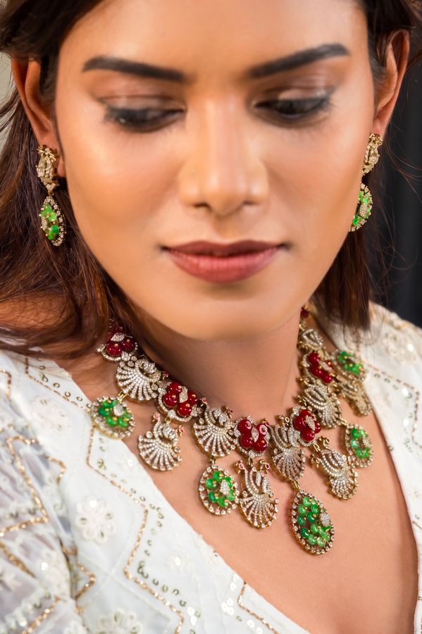
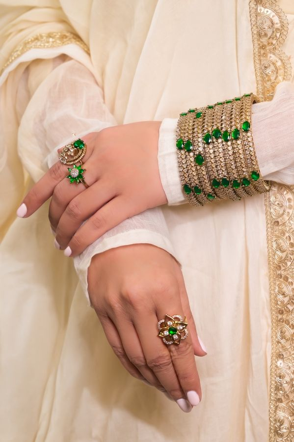

From a single line to a finished vow
Each piece passes through the hands of karigars whose families have shaped temple gold for generations. Nothing here is hurried; every stage earns the next.

Design
Every piece begins as a drawing on paper, motifs borrowed from temple gopurams, lotus and peacock, and the deities of the South. Proportion is decided here, by eye and instinct, long before any metal is melted.

Source
We gather only what we trust — antique-finish gold, hand-cut kemp and ruby-toned stones, river pearls — from partners we know by name. Material is chosen for how it will age, not merely how it first shines.

Set
Stones are seated one by one into hand-raised collets, pressed close in the temple manner so the gold seems to cradle each colour. This is the slowest stage, and the one we refuse to rush.

Polish
The antique finish is coaxed, not forced — a warm, low glow that flatters skin and recalls heirlooms handed down. We polish to a depth of light rather than a flash of it.

Inspect
Each finished piece is examined against the light and against the original drawing. Clasps are tested, settings pressed, weight confirmed. Only then does it earn the AHANKARAKA name.